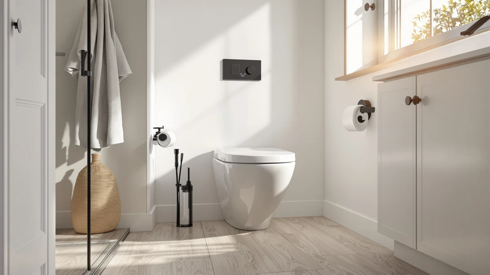

How to Replace One Piece Toilet Flush Valve (2026)
Prices and picks verified as of September 2026. Independent, reader-supported reviews.


Things to Know Before You Buy
- Flush valves on most one piece toilets are brand-specific, so match the part number stamped inside the tank rather than buying a generic universal kit.
- Because the tank and bowl are fused into a single unit, you need to remove the entire toilet to reach the flush valve locknut from underneath.
- Budget $15 to $35 for a genuine replacement flush valve kit, plus another $5 to $10 for a new wax ring since you're already pulling the toilet off the floor.
- A flush valve rarely fails alone. If the toilet also rocks or the bowl surface looks worn, the running water you're chasing may come from the flapper or fill valve instead.
- Set aside about two hours for your first attempt. Removing and resetting the toilet takes longer than swapping the valve itself.
Learning how to replace one piece toilet flush valve hardware saves you a plumber's callout fee and usually takes about two hours, even if you've never pulled a toilet off the floor before. The flush valve is the large fitting inside the tank that releases water into the bowl each time you flush, and once its seal wears out, you get a toilet that runs constantly, flushes weakly, or won't shut off between uses. This guide walks you through every step, from shutting off the water to testing the new seal, using tools most homeowners already keep in a garage or under the sink.
The job asks for patience more than plumbing experience, though it does take longer on a one piece toilet than on a two-piece model, since the tank and bowl come off the floor together. You'll drain the tank, remove the whole fixture, swap the valve and gasket, then reset the toilet and reconnect the water supply. The part that trips up first-timers is skipping the flange and wax ring while the toilet is already off the floor. Handle that seal at the same time and you avoid a second teardown a few months later.
What You'll Need
- Supplies: a replacement flush valve kit matched to your toilet model, a wax or wax-free toilet seal, and PTFE plumber's tape
- Tools: an adjustable wrench and a screwdriver set
Step 1: Shut Off the Water and Drain the Tank
Turn the oval shutoff valve behind the toilet clockwise until it stops, then flush to send most of the water in the tank down the bowl. Hold the handle down for a few extra seconds so the tank empties as far as gravity allows before you move on.
Sponge out whatever water remains at the bottom of the tank and bowl. This step matters more on a one piece toilet than people expect, since you'll be tipping the entire fixture on its side in the next step, and standing water spills the moment it leaves the floor.
Disconnect the supply line where it threads into the base of the tank, using a small bucket or towel underneath to catch the trickle that's still in the line. Set the line aside; you'll reconnect it once the new flush valve is in place.
Step 2: Remove the One Piece Toilet From the Floor
Pry the plastic caps off the closet bolts at the base and remove the nuts underneath with an adjustable wrench. Rock the toilet gently from side to side to break the old wax seal at the flange, then lift it straight up. One piece toilets run 80 to 120 pounds, so get a second person to help you carry it to a towel or cardboard sheet nearby.
Stuff a rag into the open drain pipe as soon as the toilet is clear. Sewer gas escapes quickly once that seal is broken, and it also keeps small hardware from disappearing down the drain while you're working on the flush valve.
Lay the toilet on its side on the towel with the tank facing up, so you have clear access to the underside of the tank where the flush valve locknut sits. This is the access point that a two-piece toilet skips, since its tank can usually be worked on while still bolted to the bowl.
Step 3: Detach the Old Flush Valve From the Tank
Locate the large plastic locknut on the underside of the tank, directly below the flush valve opening. Turn it counterclockwise by hand if it's loose, or use an adjustable wrench if corrosion or mineral buildup has it stuck.
Once the locknut is off, lift the old flush valve up and out through the top of the tank. Check the rubber gasket underneath it for cracks, flattening, or a hardened texture, since that gasket is almost always the reason the seal failed in the first place.
Wipe down the tank opening and the surrounding area with a damp rag to clear away any mineral scale or old gasket material. A clean, smooth surface here is what lets the new gasket seat properly in the next step.
Step 4: Install the New Flush Valve and Gasket
Slide the new rubber gasket onto the base of the replacement flush valve, then lower the valve down through the top of the tank so the gasket sits flush against the tank opening. Wrap a turn or two of PTFE tape around the threads if your kit calls for it.
From underneath, thread the locknut onto the flush valve by hand first to make sure it isn't cross-threaded, then snug it with the wrench. Stop as soon as it feels tight and stable. Overtightening here is a common way to crack the plastic threading or distort the gasket, which recreates the leak you're fixing.
Attach the flapper that came with your flush valve kit to the new valve's ears or float cup, and connect the flush lever chain with a small amount of slack, roughly the width of a link, so the flapper seats fully between flushes.
Step 5: Reinstall the Toilet and Test the Flush
Set fresh closet bolts into the flange if the old ones show rust, then press a new wax ring onto the flange, tapered side down. Lift the one piece toilet with your helper and lower it straight down onto the bolts without sliding it once it touches the wax, since dragging it breaks the seal you set moments earlier.
Sit on the bowl or press down evenly with both hands to seat the wax, thread on the washers and nuts, and tighten them a quarter turn at a time, alternating sides, until the toilet stops rocking. Reconnect the supply line and turn the shutoff valve counterclockwise to let the tank fill.
Flush the toilet four or five times and watch the flush valve area underneath the tank for drips, along with the base and the supply line connection. A properly replaced flush valve gives you a full, quiet flush and a tank that stops filling on its own within a minute or two.
Common Mistakes to Avoid
Buying a universal flush valve instead of one matched to your toilet's brand and tank shape is the most common mistake in this repair. One piece toilets often use a proprietary tank opening size or a specific flapper style, and a universal kit that doesn't seat correctly will leak again within weeks. Check the part number stamped inside the tank or bring the old valve to the hardware store before you buy a replacement.
Overtightening the locknut under the tank is a close second. The plastic threading on most flush valve kits cracks under too much torque, and a hairline crack often doesn't show up until the tank has been refilled and drained a few times. Snug the locknut until it feels stable, then stop.
Reusing the old wax ring when you reset the toilet is another shortcut that backfires. Wax compresses permanently the first time you set it, so a used ring won't reseal against the flange even if it still looks intact. A new ring costs about $5 and is the cheapest insurance against a leak at the base after all this work on the flush valve.
Finally, skipping the test flushes before you leave the bathroom means you find a slow leak days later instead of minutes later. Run the toilet four or five times, feel around the flush valve and the base for dampness, and confirm the tank stops filling within a minute or two before you consider the job finished.
Our Top Picks
If your flush valve is corroded past saving, or the tank itself is cracked around the opening, replacing the whole one piece toilet often costs less over time than a second repair. These three models come up often in owner reviews for a flush valve seal that holds up on a standard rough-in.

Editor's Pick
Casta Diva One Piece Toilet
A skirted design with a factory-sealed flush valve, useful if you'd rather retire an aging tank than keep chasing leaks around the valve seal.
$289.99
Check Price on Amazon
Best Value
HOROW T0338W Compact One Piece
A compact footprint that fits smaller bathrooms, with a standard flush valve setup that owners describe as straightforward to service if it ever needs attention.
$220.15
Check Price on Amazon
Premium Choice
Casta Diva Elongated One Piece
An elongated, comfort-height bowl for buyers who'd rather upgrade the whole fixture than replace a flush valve on a toilet nearing the end of its life.
$225.70
Check Price on AmazonFrequently Asked Questions
How do I know if my one piece toilet flush valve needs replacing?
The clearest sign is a toilet that runs on its own every few minutes, since that usually means the valve seat is worn and won't hold a seal against the flapper. A weak or partial flush, or a flush handle that feels loose and doesn't trigger a full cycle, also points to a failing flush valve rather than a clog.
Can I replace a flush valve without removing the whole toilet?
On most one piece toilets, no. The tank and bowl are fused into a single unit, so the flush valve's locknut sits underneath the tank in a spot you can only reach once the toilet is off the floor. Two-piece toilets sometimes allow tank-only access, but one piece models almost always require a full removal.
How much does a one piece toilet flush valve kit cost?
Most replacement flush valve kits run between $15 and $35, depending on the brand and whether the kit includes a matching flapper and gasket. Add another $5 to $10 for a new wax ring, since you should not reuse the old one once the toilet comes off the floor.
Why does my toilet still run after I replaced the flush valve?
Check the chain slack between the flapper and the flush lever first, since a chain that's too tight holds the flapper open a crack and lets water trickle through constantly. If the chain looks right, the fill valve rather than the flush valve is the likely culprit, and it's a separate part that sits on the opposite side of the tank.
Is replacing a one piece toilet flush valve a good DIY project?
Yes, for most homeowners comfortable with basic tools and an afternoon of work. The steps are straightforward, but budget extra time compared with a two-piece toilet, since you're lifting and resetting the entire fixture rather than working on the tank alone. Call a plumber if the shutoff valve itself is seized or the flange underneath turns out to be cracked.
Verdict
Once you know how to replace one piece toilet flush valve hardware, the repair comes down to patience and a clean seal rather than any special skill. Shut off the water, remove the toilet completely, swap the valve and gasket, and reset the fixture with a fresh wax ring, and you fix the two problems that send most people searching for this repair: a toilet that runs constantly and a flush that never fully clears the bowl. Budget an afternoon rather than an hour for your first attempt, since removing and resetting a one piece toilet takes longer than the valve swap itself.
If your current toilet is old enough that the flush valve isn't the only thing wearing out, replacing the whole fixture can be the more practical move. Among the models we compared, the Casta Diva One Piece Toilet is a solid option, with a sealed flush valve and a skirted base that owners rate highly for a clean look and a reliable flush. Whichever route you take, the steps above apply the same way to any one piece toilet you're working on.